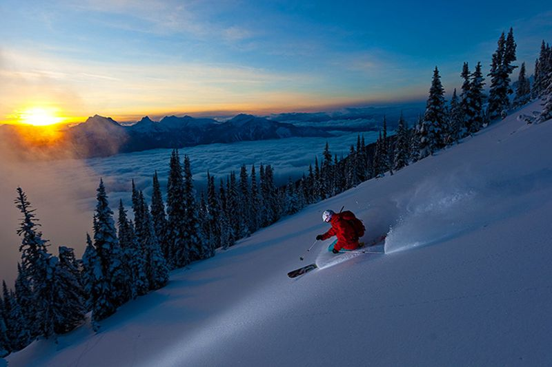
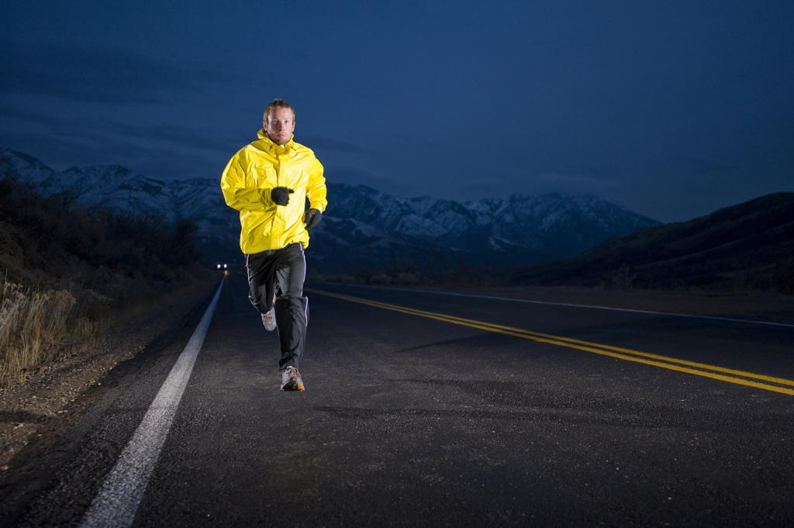

Тренируйтесь как профессионал
Методика от известного тренера сборной России по биатлону.

Контроль результата
Держите руку на пульсе и улучшайте свой результат.

Лучшая методика
Методика, проверенная годами и подтвежденная медалями.